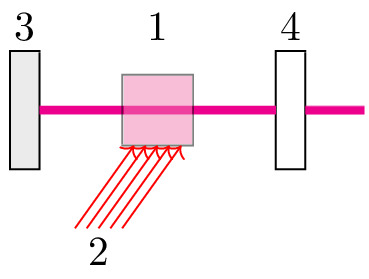

pre.tex
\documentclass[tikz]{standalone}\input{pre.tex}\begin{document}\begin{tikzpicture}
\xdef\darkness{0}
% \xdef\SIZE{10}
% \draw[step=1.0,blue,thick] (0,0) grid (\SIZE,\SIZE);
% \draw[step=0.5,blue,very thin] (0,0) grid (\SIZE,\SIZE);
% \foreach \i in {0,1,...,\SIZE} {
% \draw (0,\i) node [left] {\i};
% \draw (\i,0) node [below] {\i};
% }
% resonator
\draw [fill=black!\darkness] (5,0) rectangle ++(0.25,1);
\coordinate (res-right-right) at (5.25,0.5);
\coordinate (res-right-left) at (5,0.5);
\coordinate (res-right) at (5.12,0.5);
\draw [fill=black!10] (3,0) rectangle ++(-0.25,1);
\coordinate (res-left-left) at (2.75,0.5);
\coordinate (res-left-right) at (3,0.5);
\coordinate (res-left) at (2.87,0.5);
\coordinate (pol1) at (0.5,0.5);
\coordinate (pol2) at (0.5,2.5);
% forward wave
\draw[line width=2pt,magenta]
% (LAS1-left) -- (res-right-right)
(res-right-left) -- (res-left-right)
(res-right-right) -- ++(0.5,0)
% (res-left-left) -- (pol1)
% (pol1) -- ++ (-2,0) node [left, black] {накачка}
;
% environment
\draw[fill=magenta!65, opacity=0.5] (3.7, 0.2) rectangle (4.3,0.8);
\coordinate (env) at (4,0.5);
%caption
% \draw (pol1) node [left, yshift=-1em] {$4a$};
% \draw (pol2) node [right, yshift=1em] {$4b$};
\draw (res-right) node [ yshift=2em] {$4$};
\draw (res-left) node [ yshift=2em] {$3$};
\draw (env) node [yshift=2em] {$1$};
% \draw (LAS1) node [yshift=2em] {$1$};
% \draw (CAM1) node [yshift=2em] {$5$};
\foreach \i in {3.8,3.9,...,4.2} {
\draw[red,->] (\i-0.5,-0.5) -- (\i,0.2);
}
\node (a) at (3.5,-0.7) {2};
\end{tikzpicture}\end{document}